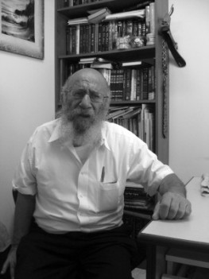

A Balancing Act
Sixty-one years ago, when he was still a bachur, the Rebbe farbrenged in his honor and gave him a special educational mission. Since then, he has been involved in chinuch. * For Shavuos, we interviewed Rabbi Zushe Posner about chinuch. He spoke in his usual direct, penetrating manner, with his focus on one point, the Rebbe. This is the point around which he lives and operates. He is not inclined to employ clever verbiage or verbal contortions to please his listeners. He believes that goodness and blessing will come from truth and that truth will sprout from the simplest, most basic of places. * “Our children will be our guarantors.” * Part 2 of 2

R’ Zushe’s father, R’ Sholom Posner, was a Tamim in Lubavitch. He immigrated to the US and settled in Chicago. When the Rebbe Rayatz arrived in the US, he wanted to go to the Rebbe but did not have the money for the trip. He was a shamash, and some of the balabatim in his k’hilla who had been close to Rabbi Avrohom Schneersohn of Kishinev, the Rebbe Rayatz’s father-in-law, went to New York to meet the Rebbe Rayatz.
One of them told the Rebbe Rayatz that they had a shamash in their k’hilla who was a Lubavitcher Chassid by the name of Sholom Posner, who had learned in Lubavitch. He asked whether the Rebbe remembered him. The Rebbe said, “Do I remember Sholom? Sholom is mine!”
The Rebbe Rayatz said marvelous things about him. The Rebbe once wanted to give an example of what a Tamim is and said, “Sholom, that’s what is called a Tamim.”
“But that’s a level that anyone can attain, it’s not beyond us,” says his son, R’ Zushe. “First and foremost, you need kabbalas ol and devotion to the Rebbe. When my father went to the Rebbe Rayatz for the first time after the Rebbe arrived in 1940, he said to the Rebbe, ‘I am bringing my children to the Rebbe and the Rebbe should be responsible for them.’ He absolutely negated himself and gave his children to the Rebbe.
“I don’t have a ‘prescription’ for good chinuch, but I have some good advice. First, you – the parent – need to behave properly. A child looks at his parents and sees how they behave, and that is how he operates as well. When he sees that his father does not go to shul, he won’t go either. Secondly, every day, you need to say some chapters of T’hillim. In the HaYom Yom, the Rebbe writes that you need to think about the chinuch of your children every day. One of the explanations is to think about yourself, how you behave.
“A third thing is to send your children to the Rebbe’s mosdos and give them over to the Rebbe. I have a daughter who is a grandmother. When she was in school, a problem came up with the administration. The truth is, she was right and not the hanhala. The next day, the teacher met her and said, ‘Don’t send your father again; it’s not worth it for you. He is not working in your interests.’ I take the position that the hanhala in the Rebbe’s mosad is always right, even when it’s not.
“Someone once said to me, ‘Zushe, you made life easy for yourself by sending them to the Rebbe’s schools. That way, you have no responsibility.’ I told him, ‘Relax. Tell me, what happens when your son comes home from yeshiva with marks of the beating he got?’ He said, ‘What do you mean? I’d go and beat up the mashgiach!’ I said, ‘No. Your child does not belong to you. He belongs to the Rebbe and his mosad. You cannot intervene. You think that’s an easy life? It’s not.’
“Indeed, it happened that my son once came home with marks from a beating. My wife (about whom the Rebbe once said, ‘She is an eisha k’sheira who does the will of her husband’) asked me to go and talk with his mashgiach. I told her, ‘If you tell me to take him out of the yeshiva, I’m willing to discuss it, but if he remains there, I won’t go and make demands about his humiliation and smacks.’ Years later, that mashgiach told me that she went to him, but he didn’t want to tell me, so as not to cause tensions at home.
“A child needs to be in the Rebbe’s mosdos where the Rebbe is responsible for him, and if the Rebbe is responsible, the parents should not interfere. You might be able to intervene but only in a way of suggestion and improvement, but not actual interference. A child needs to know that when a teacher or mashgiach or mashpia say something, they are right, even when they’re not, because this is the Rebbe’s mosad and they are his shluchim.”
If you know that the teacher is not right and the teacher himself knows that he isn’t right, then what is the point in accepting it with kabbalas ol? This is chinuch?
“You need to constantly check: the student checks himself, the teacher checks himself, and the parents themselves. The principal also needs to check himself and the staff, but that does not contradict the fact that they are shluchim who are doing their shlichus, and when it’s the system versus the student, the system comes out on top because it is the extended arm of the Rebbe.”
When you speak of people in chinuch working as shluchim in the Rebbe’s mosad, do you think that they are all doing what the Rebbe wants educationally? Don’t teachers or principals sometimes do things that go against what the Rebbe wants?
“Of course, that happens.”
So what sort of principle is it to say, “I don’t ask questions; it’s all holy”?
“It all begins and ends with our relationship with the Rebbe. Our problem is that we don’t want a Rebbe; we want a tzaddik, we want someone holy and pure, but not a Rebbe! When you place your trust in a Rebbe, that means absolute trust, no half or third measures. The relationship with a Rebbe is completely different than any other relationship in the world.
“Before Gimmel Tammuz 5754, before 27 Adar 5752, there weren’t problems? There were. There were always problems, and they dealt with them. Today they try to be oiber chachamim (overly clever).
“I’ll give you another example that really riles me. There’s K’vutza and there are those who are opposed to it. That’s nothing new; forty years ago there were those who didn’t want K’vutza either. They said the bachurim who come for a year on K’vutza don’t learn. They began to find excuses not to accept talmidim from Eretz Yisroel. I recently spoke with someone who is in the hanhala of the yeshiva who said, ‘Who needs the Israeli bachurim?’ I asked him, ‘And who needs you here?’ If we are going to start speaking like that, we could apply it to everybody.
“But the Rebbe wants K’vutza. They saw how the Rebbe put in great efforts so there would be K’vutza, and that was when we saw and heard the Rebbe, so what kind of twisted arguments are they trying to use to speak against it today?
“There is a problem here. People don’t learn Chassidus. Period. They learn maamarim, they learn Chassidus, but they don’t really learn Chassidus. When I teach Chassidus in yeshiva, I try not to teach maamarim; I don’t care whether they’ll know the content of the maamarim or not. I want them to know what is in the maamer, the concepts brought in the maamer. There is knowing something in a way of makif and knowing in a way of p’nimi.
“I’ll give you an example. Do you know that you are alive? Everyone will say that he is alive, but that’s bubbe maisos. You experience feelings so you assume that you are alive; but you don’t feel that you are alive. When you want to know whether you are asleep or awake, you pinch yourself to feel it and prove that you are really awake, but you don’t really know that you are awake. The knowledge isn’t genuine knowledge; it’s the result of something else.
“So too regarding the question about whether one should go to 770 these days. Until Gimmel Tammuz, we thought we were going to 770 to recharge our batteries. We saw the Rebbe, we heard him, but it was a fool’s paradise. Today, when I am asked whether to go, I say we must go, because now we get more than before. Then, we thought we were getting p’nimius, but it was far from it. It was imaginary. Today, when we don’t see giluyim, it is possible to get the Rebbe, to get ‘essence.’
“That is the way it is in the Rebbe’s mosdos, specifically in the Rebbe’s mosdos and not in other mosdos. If you want a mosad on a higher level or less, that’s possible somewhere else. But when a child is in the Rebbe’s mosad, he gets his chayus from the Rebbe. True, they might serve (spiritual) food that isn’t that great, isn’t that tasty, and maybe not so fresh, but it’s the Rebbe’s food!
“Another thing, there are all kinds of mosdos that were started over the years, but they were set up to oppose the existing mosdos, not to add to the existing ones but to oppose the existing ones, and that’s a problem. It says, ‘and Yisroel camped there opposite the mountain.’ It’s explained that they were like one man with one heart. Do you know why they were united? Because it was ‘opposite the mountain.’ When you are opposed to something, all the forces become open to uniting.”
You spoke earlier about our relationship with the Rebbe. Do you really believe that it is possible today to take a child whose own father didn’t see the Rebbe and explain to him that he needs to live the way you say?
“Of course. Did you hear before how I spoke about Berel Kurenitzer?”
Yes, with great chayus and tears in your eyes …
“Right. He is someone who is very dear to me and that’s despite my never meeting him. We had a relative by the name of Chatshe Feigin. In our family, we ‘lived’ with him (although he was killed by the Nazis, and we never saw him). Why? Because we spoke about him, we thought about him, he was a subject in our family. The same is true for the Rebbe.
“You can live with the Rebbe on the same level and even more. Speak about the Rebbe, think about the Rebbe, watch a video of the Rebbe. When you see a video of the Rebbe, think and say out loud: Rebbe, I want to see you, not a video of you. I say to the chevra that their ‘idle talk’ needs to be about 770, about the Rebbe. Talk about him, think about him, and of course go on his mivtzaim and learn his sichos. Can we educate the younger generation to live with the Rebbe? It’s possible, definitely possible, but it’s not easy.
“You’ve noticed how I ‘live’ Berel Kurenitzer, so I’ll tell you something else about him. He was an older bachur in yeshiva and got married around the age of 36. He had tuberculosis, which was considered a serious disease. The Germans murdered him.
“The Rebbe Rayatz’s daughter, Rebbetzin Chana, took care of him during his illness. Every day she brought him an orange. In Poland of eighty years ago, an orange was a rarity. One day, she went to him and he told her that the Rebbe, her father, ‘Came to me in a dream and said a maamer Chassidus and I remember the maamer.’
“She went home and told her father. The Rebbe said in surprise, ‘He remembers it!’ A while later, they took another X-ray of his lungs and they were clear. They connected the recovery with that dream.
“That’s what we call living with the Rebbe, instilling the Rebbe until it’s felt in the physical body.”
THE POINT OF ALL POINTS: THE REBBE
Since that shlichus R’ Zushe got from the Rebbe that evening in Elul 5718, he has been involved in chinuch. After he returned to Eretz Yisroel, he devoted himself to chinuch. Before he married, he taught in the schools in Zarnoga, Taanach, and in Kfar Saba. After he married, he continued teaching in Moshav Brosh and on Rosh Chodesh Tammuz 5720, he went to Lud to work in the yeshiva.
“Since then, I have worked in chinuch except for very short breaks.”
He has seen generations who are now fathers and grandfathers to his current students, and he has a lot of praise for the current generation, but he pleads with them that they do things with truth, and when R’ Zushe speaks about truth and seriousness, he means it from his own deepest place of truth. He does not hesitate to talk about various symptomatic phenomena and dissect them with a scalpel, even if it isn’t popular.
When R’ Zushe talks about the ultimate point of truth, he always gets to the point of all points: the Rebbe. When it comes to this topic, there is no compromising for him and his heart speaks while his lips move. He loudly drags out the word “Rebbe,” and nearly pounds on the table.
“I have a grandson, a bachur on K’vutza. He said to me, ‘We bachurim live with fanaticism. The only thing keeping us going is fanaticism; otherwise, how would we know the Rebbe, how would we hold on to him?’ I told him I agree with him, but he needs to examine how real it is. You make a shvil? Fine. But you need to demand and say, ‘Rebbe, come in; Rebbe, we are waiting for you! Rebbe, reveal yourself to us!’ You put a chair for him on the platform for davening? Fine. But along with this you need to demand of the Rebbe, ‘Rebbe, we want you to sit down and show us that you are sitting. The same for when you prepare a place for him at a farbrengen and at 1:30 everyone sits down there. The longing ought to be: ‘Rebbe, be revealed here and now.’
“Bachurim who are extremists? That’s fine, but you need to examine how real it is. (Painfully): Bachurim don’t learn Yiddish, they don’t know Yiddish. When Moshiach comes into 770, we don’t know how he will be revealed, how he will choose to appear, but suddenly in will come this man with a black beard, for example, and go through the shvil. The bachurim will chase him away. He will shout, ‘Ich bin Moshiach!’ but they won’t understand what he’s saying because he is speaking in Yiddish, not to mention the ‘new Torah that will go forth from me,’ that they won’t understand.
“They do this or that and want to live with fanaticism? Live! But you need to do it for real.
“This is a period of confusion. People argue about where to put the pidyon nefesh, whether in 770 or the Ohel. Each one knows what to do, each one has solutions. The elders of today don’t know how to deal with the current situation but the young ones do. They deal with the current difficult situation sometimes better and sometimes less so, but they handle it.”
EDUCATION NEEDS PROFESSIONALISM
R’ Zushe is the director of the Chinuch Committee of Agudas Chassidei Chabad in Eretz Yisroel. This committee was founded by his friend, R’ Shlomo Maidanchek a”h, and it has wrought significant changes in the field of Chassidishe chinuch in Eretz Yisroel. There have been dozens of evenings for parents, education conferences for educators and principals, camps for special-needs children, etc.
Why do we need yemei iyun, conventions and seminars, which we did not have in the past?
“They’re needed. You spoke earlier about teachers who don’t do their jobs as they should. There is definitely a need to improve the performance and professionalism of teachers. These seminars are meant for just that purpose. Teachers come and hear ideas and tips for improvement.
“Seventy years ago, most doctors were general doctors. A doctor was a maven in all medical problems. The surgeon was a general surgeon, on nearly every part of the body. Today, there are specialists in every area to the extent that I have a friend who is an orthopedist who specializes in children’s hands! The same is true for the world of rabbanus. It used to be that a rav would respond to all questions. Today, it is very common for rabbanim to specialize in specific areas whether it’s kashrus, mikvaos, modern technology, etc. So too for teachers, they need to acquire more expertise and more professional skills.”
R’ Zushe talks a lot about the introduction of improvements and new ideas in the field of teaching, for example visual aids that are absent in Torah elementary schools, not to mention yeshivos. He finds the situation painful.
“Visual aids are learning aids of the first order that are used in every other educational framework, like universities etc. Why not in yeshivos?”
When I try to carefully suggest that maybe it’s coming from the desire to preserve our traditional chinuch, R’ Zushe dismisses that with a wave of his hand.
“There’s no connection. Always, when there are innovations, there are opponents, but in the end, it’s accepted. The same was true when the Rambam wrote his Yad HaChazaka and he was opposed, and the same thing happened with the writing of the Shulchan Aruch and many other things.”
There are those who say “chadash asur min ha’Torah” (new things are forbidden by the Torah) …
“If you think so, then ride with a horse and wagon and don’t use a car, and don’t listen to music on CD’s. The problem is that those who claim that it’s forbidden to innovate, ride in the latest cars. They are the ones who know all about ‘enter’ and ‘delete.’
“I don’t want it said that Zushe Posner is advocating for upheavals, but we absolutely need to improve the approach, although it all must be done with proper supervision.”
Under the auspices of the Chinuch Committee of Agudas Chassidei Chabad you have held many gatherings and arvei iyun for parents, principals and teachers. You’ve also had events for special-needs children and their parents. You’ve shaken things up. Do you see changes on the ground?
R’ Zushe answered in his typical way. “What difference does it make whether I see a change or not? That I see or don’t see doesn’t mean anything. But practically speaking, of course there’s a change.
“Listen well. There are two men, R’ Menachem Mendel Blizinsky and R’ Reuven Kupchik. They could be my grandchildren. They are doing all this work very devotedly. Everyone opposes them but they keep on doing. In this enterprise, I am the white beard, while they do all the work. If they weren’t interfered with, they would be doing a lot more.”
R’ Zushe presents things as he chooses, but it is definitely not unusual to see him sitting with people younger than him by decades, preparing impressive educational plans. R’ Zushe speaks about the present generation with a somewhat conflicted message. He refers to something said by the Chozeh of Lublin who said that Adam and Chava raised their children and gave them everything. Their children gave everything for the next generation, and the next generation to the next. Each generation devoted itself to the following generation and he is waiting, with great curiosity, to see who are the final children for whom everyone worked.
“These children are the children of the generation of Moshiach. Everything boils down to them, and they are the children of our generation. This is a tangible manifestation of the inyan of ‘high above with no end and down below with no end.’
“Rabbi Shmuel Levitin once said that there are two types of questions. There’s a question to which you get an answer but the question remains. And then there is an answer that makes the question no longer a question. For example, a bachur comes into zal late and the mashgiach asks him why he is late. The bachur says, I was busy, or, I was sleeping. That’s an answer but the question remains: Still and all, why are you late?
“But when the bachur says, ‘I didn’t come in late,’ the question disappears. When Moshiach will come, there won’t be questions and everything else will automatically fall away.
“Moshiach will come when he wants and the Rebbe also says this in his sichos, ‘There is no rational reason for why Moshiach has not come. All the birurim were taken care of, all the buttons were polished, etc., so why is he delayed? There is no reason.’”
***
In conclusion, R’ Zushe wanted to go back to an earlier point, one which he considers the main point of this long conversation:
“We need to want a Rebbe. ‘Atzmus Ein Sof,’ ‘Moshiach,’ and ‘Rebbe,’ are one thing. When you say one, you mean the others; I’m talking about those who talk about the Rebbe and forget about Moshiach and those who talk about Moshiach and forget the Rebbe, and those who are involved with both and forget about Hashem. Everything is important, but you need to find a balance between it all and that’s what I try to do. Balance is the key word. Likewise, the balance between this generation and the previous generation; the balance between what is desirable and what is available. When I go to a farbrengen and hear talk about the past, I speak in praise of the present, and when they speak about the present, I talk about the past. I always try to balance it.”
Are you successful?
“I don’t know. I try.”
Menachem Ziegelboim. "A Balancing Act." Beis Moshiach, no. 1119 (May 22, 2018).